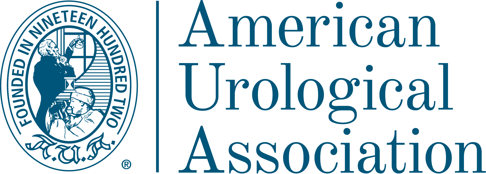

State of the Art in
IgA
Nephropathy
De la proteinuria como biomarcador a la nueva era del bloqueo dual de receptores. El programa definitivo para liderar la precisión renal basada en la evidencia de la AUA.
"La medicina de precisión no es solo una diana terapéutica; es la respuesta ética a la biografía del paciente renal."
El Nuevo Paradigma:
El Bloqueo Dual de Receptores.
Hacia un tratamiento dirigido para frenar la progresión a diálisis.
La excelencia técnica es la primera forma de caridad hipocrática.
Metodología UX y Certificación Oficial.
Un entorno virtual de aprendizaje diseñado para garantizar la adquisición de competencias clínicas reales, integrando el prestigio de la AUA con la acreditación del SNS.
-
school
Evaluación Formativa Continua
Cuestionarios interactivos (Self-Assessments) con feedback razonado al instante basado en la evidencia AUA.
-
auto_stories
Contenidos de Clase Mundial
Curaduría científica extraída directamente de los Journals de la American Urological Association (AUA).
-
verified
Acreditación SNS
Certificado oficial con créditos de Formación Continuada (CFC) para la carrera profesional sanitaria.

Respaldo Científico ExclusivoItinerario Curricular.
3 Módulos / 8 Secciones.
Cada módulo garantiza una inmersión clínica profunda a través de los 8 pilares de la metodología Hygeia Hub.
Metodología Hygeia
Executive Brief
La proteinuria como subrogado de supervivencia renal.
Scientific Core
Artículos de The Journal of Urology® sobre eGFR y proteinuria.
Critical Debate
Biopsia molecular vs. Biomarcadores dinámicos.
Further Readings
Registros de AUA y guías de testeo actualizadas.
Practice Insights
Algoritmo clínico para estratificación del paciente de alto riesgo.
Clinical Cases
Manejo diagnóstico en paciente con proteinuria persistente.
Self-Assessment
Test sobre conceptos de fisiopatología molecular.
Multimedia
Arquitectura del glomérulo y cascada inflamatoria IgA.
Executive Brief
Inhibición dual: Sinergia terapéutica en filtrado glomerular.
Scientific Core
Resultados de eficacia de las nuevas terapias (Urology Practice®).
Critical Debate
Gestión de parámetros metabólicos y hematológicos.
Further Readings
Consensos AUA sobre farmacología de precisión.
Practice Insights
Checklist clínico para inicio y titulación de terapias sistémicas.
Clinical Cases
Switch terapéutico y ajuste basado en perfil analítico.
Self-Assessment
Evaluación sobre monitorización de volemia y función hepática.
Multimedia
Animación 3D de modulación de vías de señalización.
Executive Brief
El impacto del pronóstico en el proyecto vital del paciente joven.
Scientific Core
Patient Reported Outcomes (PROs) en patología glomerular.
Critical Debate
Equilibrando la tecnología diagnóstica con la alianza terapéutica.
Further Readings
Recursos de Medicina Narrativa y Toma de Decisiones Compartida.
Practice Insights
Herramientas de evaluación bio-psico-social en consulta.
Clinical Cases
Gestión de la ansiedad frente al riesgo de progresión a diálisis.
Self-Assessment
Identificación precoz de fatiga por compasión en el profesional.
Multimedia
Testimonios de pacientes: "Ganar años fuera de la diálisis".
Público Objetivo.
Nefrología Especializada
Diagnóstico histológico, estratificación del riesgo e instauración de la doble inhibición de receptores.
Especialistas en Urología
Diagnóstico diferencial temprano (hematuria) y coordinación de cuidados en centros quirúrgicos.
Medicina de Familia y AP
Cribado proactivo de proteinuria/hematuria y seguimiento compartido del paciente crónico renal.
Médicos Residentes (MIR)
Formación troncal ineludible en las nuevas dianas moleculares y el enfoque humanista de la patología crónica.
Dirección Académica.
Dr. Manuel Praga Terente
Jefe de Sección Nefrología (Emérito). Hospital Univ. 12 de Octubre. Investigador Principal (Protección Glomerular).
Dr. Eduardo Gutiérrez
Unidad de Enf. Glomerulares. Hospital Univ. 12 de Octubre. Experto en Biomarcadores Dinámicos.
Dra. Montserrat Díaz
Jefa de Sección de Nefrología. Fundació Puigvert. Referente en Patient Reported Outcomes (PROs).
Hacia una
Interpretación Holística
del Paciente.
Nuestra propuesta educativa expande el horizonte molecular y sistémico para integrar el cuidado biográfico. Transformamos la innovación farmacológica en un acto de acompañamiento y excelencia clínica real.